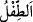

Onun ilk yaratılışına bak, bu senin için açık seçiktir
Onun yoktan var edilmesine kâdir olan
Öldükten sonra onu diriltmeye gücünün yettiği zahir olur
Hallâk/Yaratıcı odur ki hazan mevsiminden sonra
Baharı ve bahçeyi yeniden ortaya çıkarır
“Ve dilediğimizi, belirlenmiş bir süreye kadar rahimlerde bekletiriz;” Bu ifâde,
onların yaratılışlarının tamamlanmasından sonraki hallerini beyan etmek için sevk
edilmiştir. Yâni, bundan sonra biz rahimlerde tutmayı dilediğimizi belirli bir vakte, yâni
doğum vaktine kadar rahimlerde tutar, bekletiriz.
Burada işâret vardır ki Allah Teâlâ, rahimlerde olan bazı ceninlerin yaratılışlarının
tamamlanmasından sonra orada kalmasını dilemez ve düşer.
“Sonra sizi” annelerinizin karınlarında yerleştirdikten sonra belirlenen süre
tamamlandığında oradan “bir bebek” son derece zayıf olduğunuzdan kendi işlerinizi
yerine getiremeyecek bebekler “olarak dışarı çıkarırız.”
Âyette “tıflen” kelimesinin tekil olarak getirilmesi, o çocuklardan her birini ya da biri
ve daha çok sayıyı içine alan cins îtibâriyledir. el-Müfredât’ta belirtildiği üzere körpe
olduğu sürece çocuğa “/et-tıfl” denir. Molla Fenârî, Fâtiha Tefsîri’nde “Tıfıllığın
sınırı, çocuk doğup ağladığı zamandan altı yaşını bitirene kadardır.” der.
“Sonra güçlü çağınıza ulaşmanız için (sizi büyütürüz).” Bu ifâde anne karnından
çıkarılmanın sebebini bildirmektedir. Kendisine uygun başka bir sebebe atfedilmiştir.
Sanki şöyle buyrulmuştur: “Sonra sizi yavaş yavaş büyümeniz, sonra kuvvet, akıl ve
iyiyi kötüden ayırma konusunda olgunluğa ulaşmanız için çıkarırız.” Bu güçlü çağ, otuz
ile kırk yaş arasındadır. el-Kâmûs’ta der ki: “O, on sekiz ile otuz yaş arasında olur.
“Eşüdd” kelimesi, “Ânük (kurşun)” kelimesi gibi çoğul/cem’ binâsı üzere
tekil/müfreddir. Bu iki kelimenin benzeri de yoktur.”
“İçinizden kimi vefat eder;” yâni rûhu kabzolunur ve güçlü çağına ulaştıktan sonra
veya önce ölür. Vefât, ölümden ibârettir.
“Yine içinizden kimi de ömrün en verimsiz çağına” yaşlılık ve bunaklık zamanına
“kadar götürülür;” Ömür, bedenin hayat ile mamur olma müddetidir.
“Tâ ki” çok şey “bilen bir kimse olduktan sonra bir şey” hiçbir şey ya da ilimden bir
şey “bilmez hale gelsin.” Bu ifâde, onun ilminin eksilmesinden ve hâlinin tersine
dönmesinden mübâlağadır. Yoksa o çocuk gibi bazı şeyleri bilir. Yâni, tâ ki o bünyesi
zayıf, aklı kıt, anlayışı az olan önceki çocukluk zamanlarındaki durumuna dönsün.
Yaptığını unutsun, tanıdığını inkâr etsin ve önceden güç yetirdiğinden âciz kalsın. Bu
âyetle ilgili bazı hususlar Nahl sûresindeki “Sizi Allah yarattı; sonra sizi vefat
ettirecek…” (en-Nahl, 16/70) âyetinde geçti.
Şeyh Sa’dî (k.s.) der ki:
Pirlerde arama gençlik neşesi